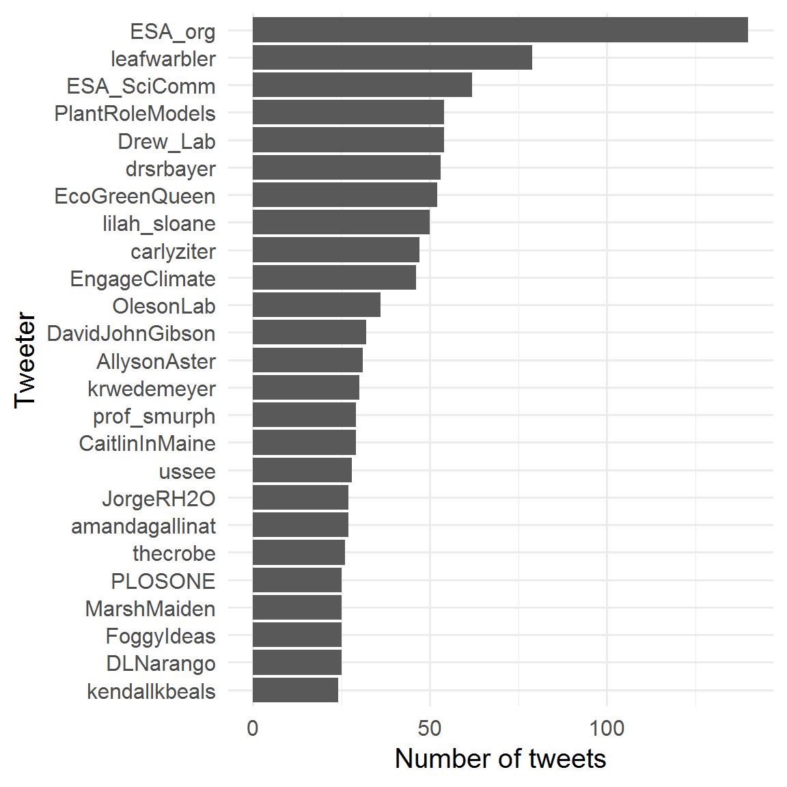
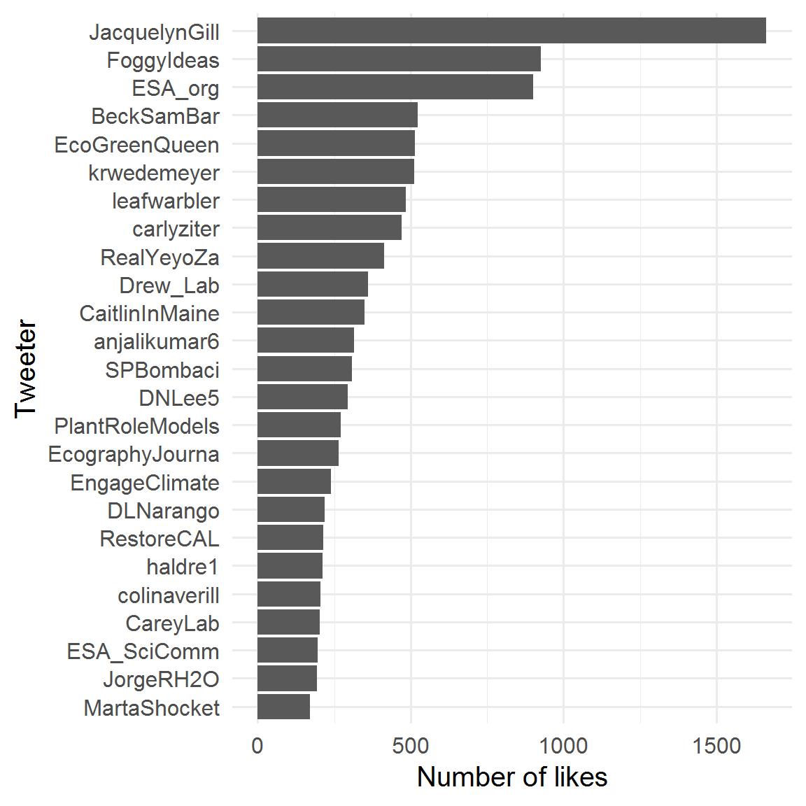
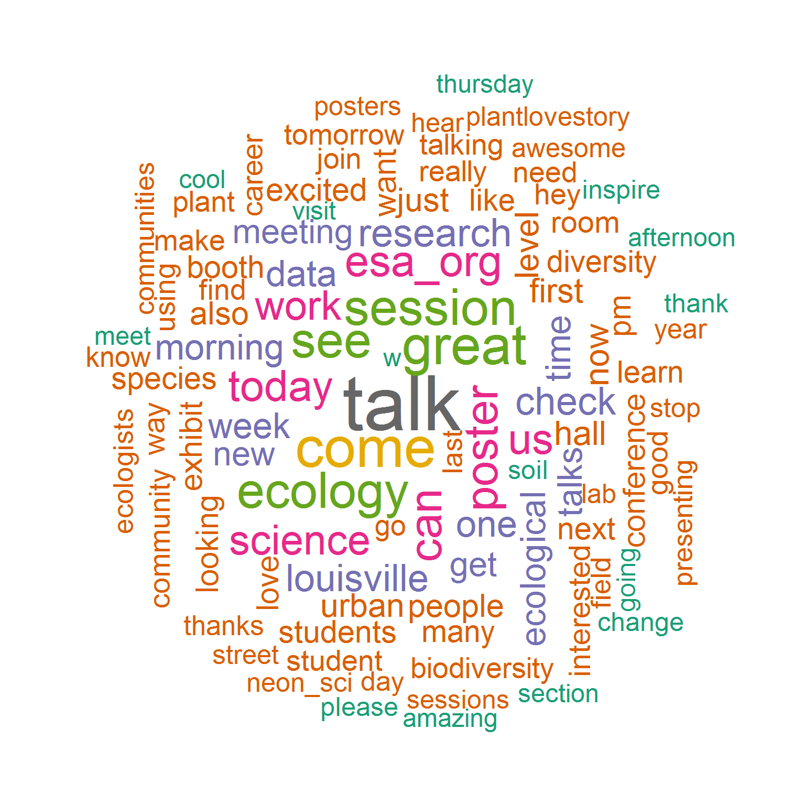
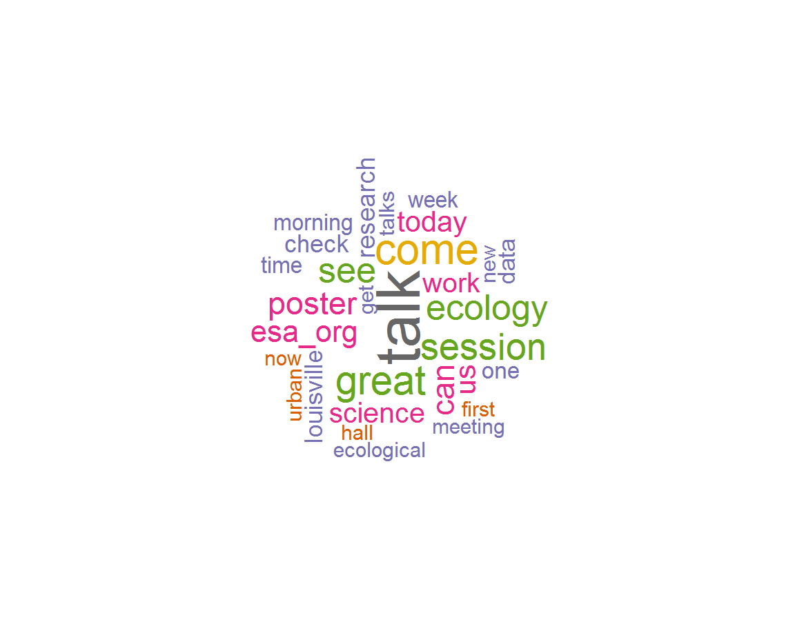
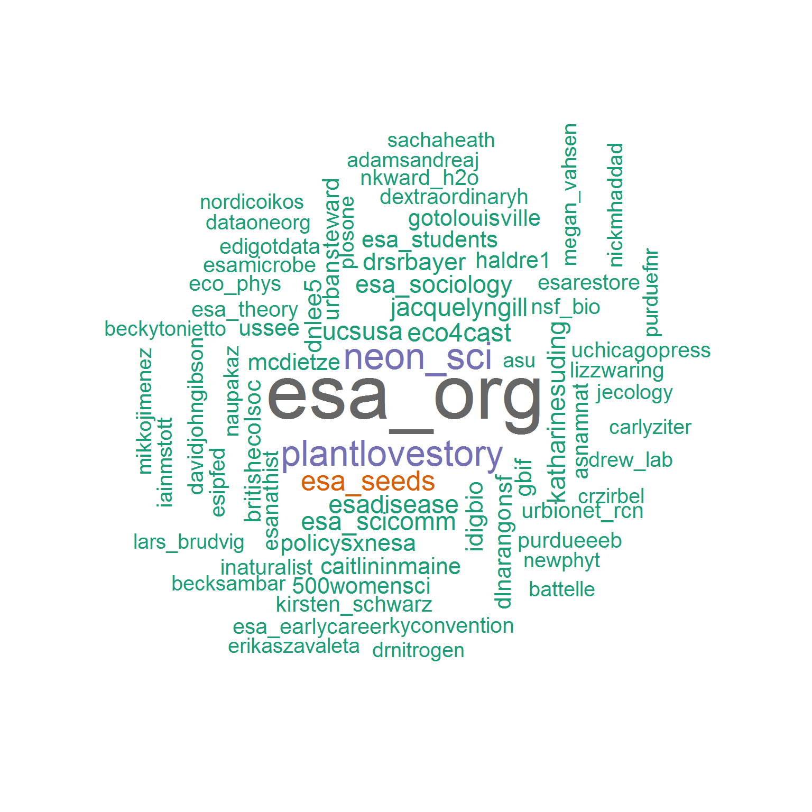
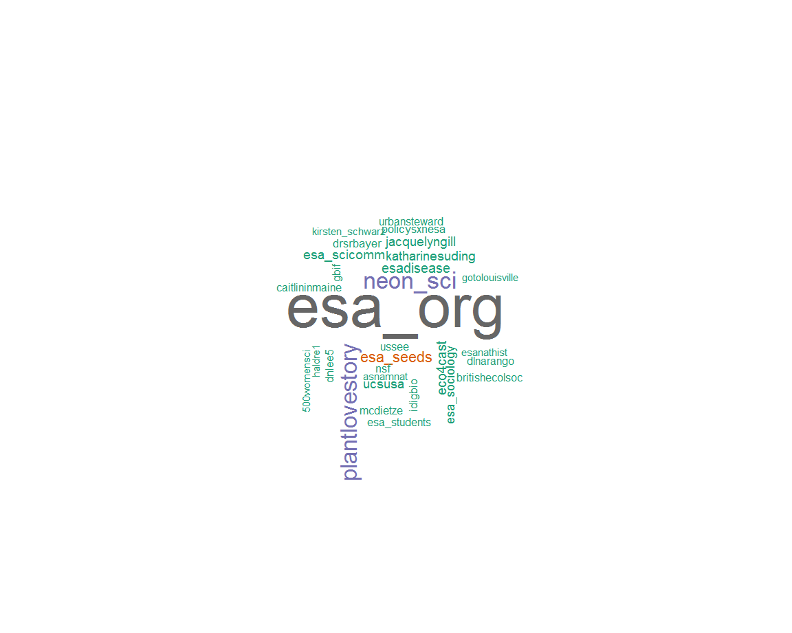

Just once, Id love to be in a workshop about bystander intervention, harassment, or improving gender diversity where the audience isnt a majority women. I guess I need to start bringing men with me? #ESA2019
Dr.Jacquelyn Gill (@JacquelynGill)
cc @sesync @nceas @MarSocSci @rOpenSci @openscience @salexander_11 @DocFroehlich @TrevorABranch @daseekell #phdchat #ESA2019
Jessica Gephart (@jagephart)
*** MOST LIKED ***
Just once, Id love to be in a workshop about bystander intervention, harassment, or improving gender diversity where the audience isnt a majority women. I guess I need to start bringing men with me? #ESA2019
Dr.Jacquelyn Gill (@JacquelynGill)
If you want to see how badly grievance studies has infected academia far beyond humanities departments you just need to check out the #ESA2019 hashtag.
Warning, you might need a drink or two before you do.
Yeyo (@RealYeyoZa)
Im starting soon as a conservation scientist at @chicagobotanic & adjunct prof at @PBCresearch w @NorthwesternU!
My lab will focus on seed biology & ecological restoration. Grad students (MS or PhD) can start in Fall 2020. LMK if youd like to chat at #ESA2019! https://t.co/zw8xMm0ybE
Prairie Dr.Becky Barak (@BeckSamBar)
Im starting a lab at @ColoradoStateU focused on animal community/trophic interactions, ecological monitoring/bioacoustics, restoration, and research in diversity & inclusion in natural resources. Seeking grad students to start in 2020. DM me if youd like to chat at #ESA2019
Sara Petrita Bombaci, PhD (@SPBombaci)
Stuart Pimm: The US is not protecting its biodiversity well; most is in the American southeast, but most protected areas are in the west and northeast. Cold/dry places, and places with $. Poor people live where the most species are: Appalachia, the sourtheast. #ESA2019
Dr.Jacquelyn Gill (@JacquelynGill)
Holla at cha girl! Maybe I should invest in a semi professional headshot? #earlycareer #ESA2019 #womeninstem #momsinstem https://t.co/eD83DEMSdM
Dr.Elise Gornish (@RestoreCAL)
Grad students at #ESA2019 its okay to not attend every session, mixer, etc. If you need time to sleep, recharge, please take the time to do it. You do not have to do it all. Even at conferences - please take time for you #phdlife
Dr.Katie Wedemeyer-Strombel (@krwedemeyer)
Keynote lecture just brought up how feminist theories changed the field of biology, WHAT?!? AND is taking about Stonewall!!! #ESA2019
Fushcia Hoover, PhD (@EcoGreenQueen)
Why should you make your pronouns known? Here are some great reasons from #ESA2019 https://t.co/wNHD9H9UUt
Anjali Kumar, Ph.D.<U+0001F3F3><U+FE0F><U+200D><U+0001F308> (@anjalikumar6)
#ESA2019 is starting off feminist + queer:
Plenary speaker Karen Warkentin talking about how heterosexual + male bias affected studies of sex differences and sexual behavior in animals.
<U+0001F308><U+0001F60D><U+0001F44D> https://t.co/B2kbJrDWgX
Marta Shocket, PhD (@MartaShocket)
Congratulations to @iceageecologist, new @ESA_org Fellow! #ESA2019 https://t.co/tpE7FvtydB
Dr.Jacquelyn Gill (@JacquelynGill)
NetLogoR: A package to build and run spatially explicit agent-based models in R https://t.co/JfanFIUOHo #rstats @StatsForBios @simplystats #ESA2019 https://t.co/YYyUTmlVBe
Ecography (@EcographyJourna)
Outstanding plenary at #ESA2019 by Karen Warkentin. Sets the tone for a conference that welcomes all people and supports the pursuit of unconventional ideas. https://t.co/XSDvin9BaL
Haldre Rogers (@haldre1)
Interested in a PhD in #LandscapeEcology at UW-Madison? Studying real-world challenges of sustaining ecosystem services in the Upper Midwest? Joining a collaborative group? Im recruiting & happy to chat at #ESA2019 (pls email if interested) @Chris_Kucharik @HydroecoLab https://t.co/9EDw7YYV5t
Monica G. Turner (@MonicaGTurner)
Yay. Excited to be at #ESA2019! Im here on my own, so lets meet up, Im always happy to make new friends! https://t.co/9QrEZ5f8Vs
Dr.Katie Wedemeyer-Strombel (@krwedemeyer)
Remember, whether abstract, paper or proposal, always answer the following questions:
Why How What So what
In that order. @AcademicChatter #phdchat @PhDForum #ESA2019
Max Rietkerk <U+0001F30D><U+267B> (@maxrietkerk)
Thanks @timonmcphearson and @erleellis. We are thrilled to receive the Innovation in Sustainability Science award at #ESA2019! https://t.co/4Bsu3hF7CA
ElenaBennett (@ElenaBennett)
Interested in bee #foraging, #pollination ecology, insect #conservation? Im recruiting lab mgr, grad trainees, postdocs and happy to chat at #ESA2019! https://t.co/HrtDOyzRVB
Elinor Lichtenberg (@DrEMLichtenberg)
Thank you @ESA_org for choosing a plenary speaker who truly embodies the #ESA2019 theme of diversity and inclusion, and makes my daughter, who grew up an ESA baby, feel so excited to be seen in her parents disciplinary academic conference today! https://t.co/KZ7pXAWtfG
Madhusudan Katti <U+2615><U+FE0F><U+0001F989> #RedForKashmir #ESA2019 (@leafwarbler)
*** MOST RETWEETED ***
If you want to see how badly grievance studies has infected academia far beyond humanities departments you just need to check out the #ESA2019 hashtag.
Warning, you might need a drink or two before you do.
Yeyo (@RealYeyoZa)
Im starting a lab at @ColoradoStateU focused on animal community/trophic interactions, ecological monitoring/bioacoustics, restoration, and research in diversity & inclusion in natural resources. Seeking grad students to start in 2020. DM me if youd like to chat at #ESA2019
Sara Petrita Bombaci, PhD (@SPBombaci)
Stuart Pimm: The US is not protecting its biodiversity well; most is in the American southeast, but most protected areas are in the west and northeast. Cold/dry places, and places with $. Poor people live where the most species are: Appalachia, the sourtheast. #ESA2019
Dr.Jacquelyn Gill (@JacquelynGill)
Interested in a PhD in #LandscapeEcology at UW-Madison? Studying real-world challenges of sustaining ecosystem services in the Upper Midwest? Joining a collaborative group? Im recruiting & happy to chat at #ESA2019 (pls email if interested) @Chris_Kucharik @HydroecoLab https://t.co/9EDw7YYV5t
Monica G. Turner (@MonicaGTurner)
Just once, Id love to be in a workshop about bystander intervention, harassment, or improving gender diversity where the audience isnt a majority women. I guess I need to start bringing men with me? #ESA2019
Dr.Jacquelyn Gill (@JacquelynGill)
Im starting soon as a conservation scientist at @chicagobotanic & adjunct prof at @PBCresearch w @NorthwesternU!
My lab will focus on seed biology & ecological restoration. Grad students (MS or PhD) can start in Fall 2020. LMK if youd like to chat at #ESA2019! https://t.co/zw8xMm0ybE
Prairie Dr.Becky Barak (@BeckSamBar)
Im recruiting a PhD student for Fall 2020 to work on an NSF-funded project in Alaska! (Toolik Lake Field station) https://t.co/2E4RZysoSJ Ill be at #ESA2019 on Monday and Tuesday, send me an email and/or DM me if youd like to talk!
Lauren Kinsman (@LKCBiogeochem)
Interested in a disease ecology PhD/postdoc/tech position studying how food & helminth coinfection shapes hantavirus dynamics in Finnish bank voles with me, @DiseaseEcol, @SBudischak & @hall_lab_uga? Find me at #ESA2019! https://t.co/QpHqwXoFjM
Clay Cressler (@ClayCressler)
Why should you make your pronouns known? Here are some great reasons from #ESA2019 https://t.co/wNHD9H9UUt
Anjali Kumar, Ph.D.<U+0001F3F3><U+FE0F><U+200D><U+0001F308> (@anjalikumar6)
Please spread the word at #ESA2019 that EEB Mentor Match is now open!
Undergrads: sign up for a mentor to help you apply for fellowships and to grad school.
EEB grad students, postdocs, faculty, and more: please sign up to be a mentor for #EEBMentorMatch this year. https://t.co/M0wsOskajZ
Terry McGlynn (@hormiga)
Interested in bee #foraging, #pollination ecology, insect #conservation? Im recruiting lab mgr, grad trainees, postdocs and happy to chat at #ESA2019! https://t.co/HrtDOyzRVB
Elinor Lichtenberg (@DrEMLichtenberg)
NetLogoR: A package to build and run spatially explicit agent-based models in R https://t.co/JfanFIUOHo #rstats @StatsForBios @simplystats #ESA2019 https://t.co/YYyUTmlVBe
Ecography (@EcographyJourna)
Do you love forests (trees, soils, microbes and more) and love to write? @CrowtherLab at @ETH_en is searching for talented postdocs who want to work with amazing data scientists to take big data projects over the finish line. Come talk to me at #ESA2019
Colin Averill (@colinaverill)
Come talk to me at #ESA2019 about an #NSF funded grad position on #grass functional ecology and #spectral traits starting summer 2020 (or the Asst Prof #GIS position below). Ill be there T-Th, DM me or email! https://t.co/mL8BSQrAoX
stephanie pau (@stephanie_pau)
Hey #ESA2019: Each year @GundInstitute offers 5-8 generous PhD and Postdoc Fellowships for interdisciplinary research on ecological/social systems. Apply this Fall. Contact me or any Gund folks at ESA, if interested. https://t.co/V2qcMCEdFm https://t.co/YZHtRLKa1x #UVM https://t.co/C7uJqtphUf
Taylor Ricketts (@TaylorHRicketts)
The legacy of past human land use in current patterns of mammal distribution https://t.co/67uq1082al #ESA2019 https://t.co/xpXROmgGu9
Ecography (@EcographyJourna)
Hey #ESA2019 please join @500womensci from 11:30am-1:15pm on Tuesday, Aug.13 in Room M100 a for lunchtime discussion on #mentoring in your institution with time for #networking. We will leave with ways to make positive changes. BYO lunch. @ESA_org
Anjali Kumar, Ph.D.<U+0001F3F3><U+FE0F><U+200D><U+0001F308> (@anjalikumar6)
Outstanding plenary at #ESA2019 by Karen Warkentin. Sets the tone for a conference that welcomes all people and supports the pursuit of unconventional ideas. https://t.co/XSDvin9BaL
Haldre Rogers (@haldre1)
Remember, whether abstract, paper or proposal, always answer the following questions:
Why How What So what
In that order. @AcademicChatter #phdchat @PhDForum #ESA2019
Max Rietkerk <U+0001F30D><U+267B> (@maxrietkerk)
*** MOST RECENT ***
cc @sesync @nceas @MarSocSci @rOpenSci @openscience @salexander_11 @DocFroehlich @TrevorABranch @daseekell #phdchat #ESA2019
Jessica Gephart (@jagephart)
Water. Whats not to love about water? Come discuss with us water in the Southwest US and Mexico and consequences of ecological shifts due to hydrologic patterns at our #Inspire session tomorrow! #itsadryheat @ESA_org #southwest #ESA2019 https://t.co/0iNjT5jXNU
ESA Southwestern Chapt (@ESA_SW)
Reunin del capitulo Latinoamericano de la Ecological Society of America #ESA2019 https://t.co/pviol8TQDe
Anibal Pauchard (@AnibalPauchard)
After presenting, time to take a break at the student mixer #ESA2019 https://t.co/tMpmDkL78O
Hugo Thierry (@HugoCodesNature)
At #ESA2019 ? Learn about the surprising lack of #biodiversity impacts of low #nitrogen @CedarCreekESR from @mwilcots9 on Wed at 2:50 in COS 63 (L006): Low input rates of nitrogen do not alter grassland species composition
Elizabeth Borer (@e_borer)
Education section meeting at #ESA2019, great group #ecology #education https://t.co/erbCrDLJBS
Dr.Vikki Rodgers <U+0001F333><U+0001F30D> (@vikkirodgers)
.@JacquelynGill and I are members of @ESA_org Governing Board. Id also love to hear your feedback, so Ill keep an eye on responses to this tweet of hers. #ESA2019 #AbstractFee/#AbstractFree https://t.co/0KSu9mWSJZ
Dr.Kathleen Treseder #MeToo (@KKTreseder)
How do you feel about a $60 abstract fee (posters are free; fees will support recordings for talks for remote participation) for future @ESA_org meetings? Is your section talking about it during your business meetings this week? #ESA2019
Dr.Jacquelyn Gill (@JacquelynGill)
Really cool science by Cassie Brown and Morgan Crimp in collaboration with Dr.Angeloni, @RJ_GriffinNolan and Dr.Lemoine at #ESA2019 ! https://t.co/oBMriFY7x0
CSU_Ecology (@CSU_Ecology)
Hey #ESA2019 : The USA-NPN is hiring! We seek an applications systems analyst/developer to support incoming data streams, work with large ecological datasets, and develop new data products. Position is full time with benefits at the University of Arizona https://t.co/d67q34el4W
USA National Phenology Network (@USANPN)
The CO2 concentration in the hall at the end of the day 2 poster session at #ESA2019 was 700 ppm.
LI-COR Environmental (@LICOR_ENV)
Happening on Thursday! #ESA2019 https://t.co/ovoBr6bSTc
ESA Communication and Engagement Section (@ESA_SciComm)
Happy to finally see the paperback of this book that Lew Ziska and I edited come out at #ESA2019! Chapters by @CascadeJBS @DrBruceWebber @plant_invader and many other great invasion biologists not on Twitter. @CABI_Invasives https://t.co/LyW6z9cHfW
Jeff Dukes (@DukesJeff)
Successful talk today and excellent conversations at #ESA2019 Carson lab representing! https://t.co/hPS1zm43kN
Michelle Spicer (@MyShellSpicer)
the Dietze Ecological Forecasting lab is en route to the Theoretical Ecology mixer at #ESA2019. ask us for details on the afterparty. @mcdietze @eco4cast https://t.co/mvCUaJZntu
Zoey Werbin (@zoeywerbin)
At #ESA2019 ? Check out Kathy Gersts poster on USA-NPN tools and data that advance science and improve decision-making! Poster 124 https://t.co/Ecdt5HQtKh
USA National Phenology Network (@USANPN)





